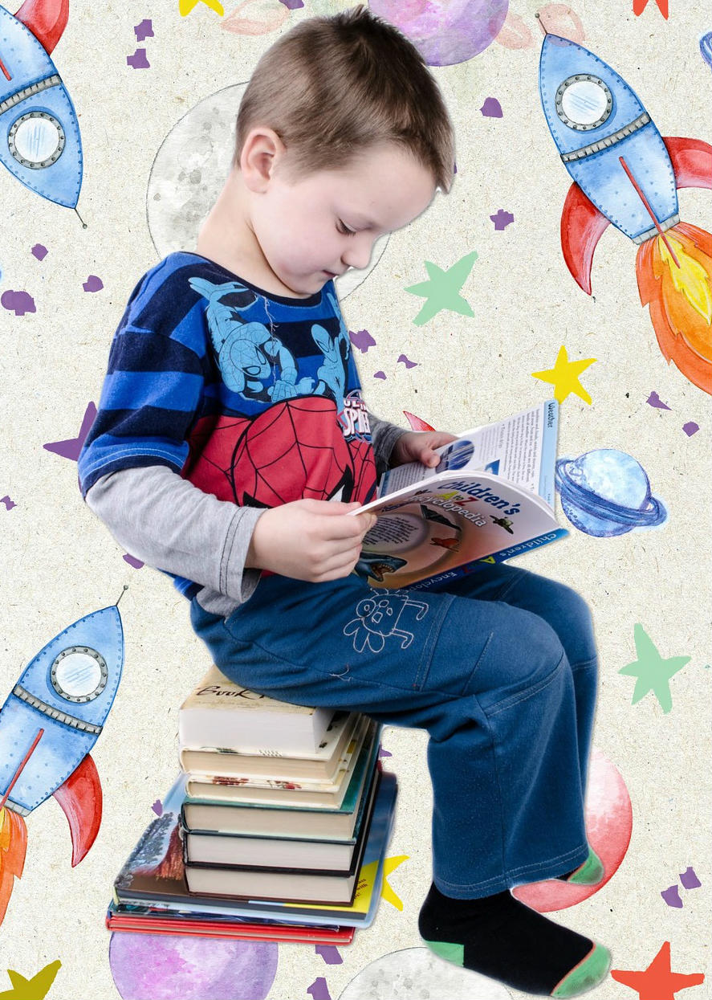

As you begin this new stage of your academic life you will find new challenges and experiences. The choices and decisions that you will make through this early stage and entry into university are some of these challenges to a bright future.
The purpose of this Career Guide is to provide you with essentials and fundamental information about the career process, which will help you to think about what you want and that will give you important support in making your choices.
